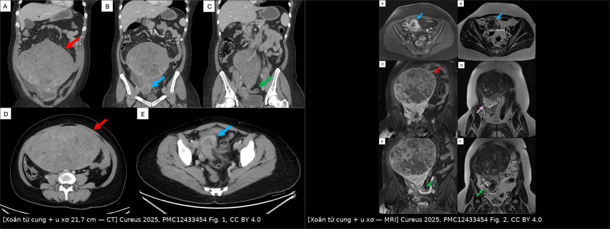
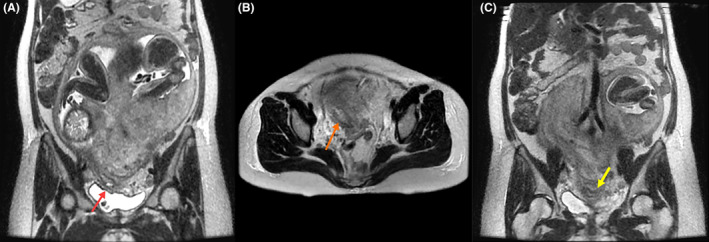
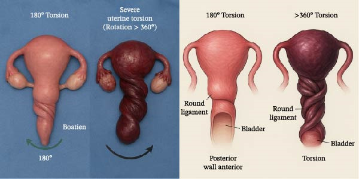

1640 — Xoắn tử cung trong thai kỳ / Gravid uterine torsion
Tags: pattern:xoan-tu-cung pattern:daubung-cap vung:tu-cung vung:tieu-khung vung:thai protocol:MRI-thai protocol:sieu-am-doppler protocol:CT-bung
Mức chắc chắn (certainty): tổng hợp y văn (literature synthesis) — gồm 1 đoàn hệ hồi cứu có đối chứng (Yoshida Y et al., Reprod Sci 2026, PMC12948917, 70 ca mổ lấy thai), 1 tổng quan 27 ca báo cáo (Boehm K et al., Cureus 2024, PMC11244724), 1 báo ca + tổng quan (Alazemi E, Case Rep Obstet Gynecol 2026, PMC13178284), 2 báo ca có mô tả hình ảnh chi tiết (Salam D et al., Cureus 2025, PMC12433454; Kim S et al., Clin Case Rep 2024, PMC10784863) và 4 báo ca bổ sung cho gamut nguyên nhân. Chưa có RCT hay nghiên cứu tiến cứu — mọi ngưỡng dưới đây là mô tả/đồng thuận, không phải khuyến cáo cấp A.
1. Tổng quan bệnh học – cơ chế hình ảnh
- Định nghĩa (ngưỡng số 1): xoắn tử cung (uterine torsion) = xoay > 45° quanh trục dọc của tử cung. Xoay **< 45° là hiện tượng sinh lý thường gặp ở tam cá nguyệt 3**, không phải bệnh (Boehm K et al. 2024; Kocher M & Hirsig L 2020; Yoshida Y et al. 2026 dùng đúng ngưỡng > 45° để định nghĩa trong đoàn hệ của họ). Y văn mô tả biên độ 45–720° (Singh S et al. 2024; Boehm K et al. 2024).
- Hướng xoay: ~2/3 ca là xoay phải (dextrorotation), phần còn lại xoay trái (Boehm K et al. 2024). Đây là con số của tổng quan, không phải quy luật tuyệt đối — ca bên trái vẫn tồn tại và không loại trừ chẩn đoán.
- Thời điểm: điển hình tam cá nguyệt 3, nhưng đã ghi nhận từ tuần thai thứ 6 (Boehm K et al. 2024).
- TẠI SAO tổn thương xảy ra theo thứ tự tĩnh mạch → động mạch (cơ chế quyết định hình ảnh): tĩnh mạch tử cung thành mỏng, áp lực thấp, bị ép trước khi vòng xoắn đủ chặt để chẹn động mạch. Hệ quả theo bậc:
- Ứ trệ tĩnh mạch → tử cung cương, phù, màu tím; hồng cầu thoát vào cơ tử cung = tử cung Couvelaire (uteroplacental apoplexy). Đây là lý do hình ảnh mổ thấy tử cung tím, xoắn "vỏ ốc" ở đoạn dưới (Alazemi E 2026, Fig. 1–2).
- Tăng áp lực mao mạch – bong nhau → chảy máu sau nhau, thai suy.
- Chẹn động mạch xoắn ốc → giảm tưới máu bánh nhau → thai suy cấp (nhịp chậm kéo dài) rồi thai lưu. Vì vậy thai suy/thai lưu có thể xuất hiện trước khi mẹ tụt huyết áp, và giải xoắn xong tử cung hồi màu là bằng chứng còn sống (Alazemi E 2026).
- TẠI SAO siêu âm hay bỏ sót (vật lý sóng âm): vòng xoắn nằm ở eo tử cung, sâu trong tiểu khung, sau bàng quang và bị tử cung to che; ở tam cá nguyệt 3 cửa sổ âm bị giới hạn, mô mỡ – hơi ruột làm suy giảm chùm tia; các dấu hiệu chỉ là gián tiếp (mạch buồng trứng quấn quanh tử cung, vị trí bánh nhau lệch, ngôi thai bất thường). Hệ quả thực tế: trong ca của Liu L et al. (Medicine 2025), cả siêu âm trước mổ lẫn CT đều KHÔNG đưa ra được chẩn đoán xác định — chẩn đoán chỉ có khi mổ.
- TẠI SAO MRI là phương thức hợp lý nhất (không xạ, không cản quang):
- Cổ tử cung bị neo ở đỉnh âm đạo; khi thân tử cung xoay, trục cổ – eo bị vặn → trên T2 không thể thấy cổ tử cung thẳng trên một lát cắt duy nhất, góc cổ – âm đạo gấp khúc, âm đạo bị kéo lệch một bên (Kocher M & Hirsig L 2020; Kim S et al. 2024 gọi là "vaginal stretch" phải, thấy hồi cứu trên MRI trước sinh).
- Dấu "whirlpool" (xoáy nước): eo tử cung đóng vai trò cuống xoắn, mô và mạch ở eo tạo hình xoáy trên các lát liên tiếp (Kocher M & Hirsig L 2020).
- Chuỗi xung dùng: single-shot T2 (HASTE/TrueFISP) 3 mặt phẳng, lát 4–6 mm, không cần gadolinium; thời gian ngắn, không cần nín thở dài — phù hợp thai phụ đau, không hợp tác.
- TẠI SAO CT ít vai trò: CT bụng–chậu có cản quang cho thấy khối u xơ khổng lồ và phần phụ bị đẩy sang bên đối diện (ca Salam D et al.: u 21,7 × 12,9 × 17,3 cm, phần phụ trái bị đẩy sang phải; xoắn 360° xác nhận khi mổ), nhưng liều xạ thai nhi khiến CT chỉ dùng khi nghi nguyên nhân ngoài sản khoa hoặc sau khi thai đã lưu.
- Tần suất thật chưa rõ: các tổng quan thường dẫn một con số "1/5500 ca sinh" nhưng ta chưa đối chiếu được bài gốc → ghi "chưa rõ — cần tra", không dùng để tư vấn nguy cơ. Con số đo được đáng tin hơn: trong 70 ca mổ lấy thai ở người có lạc nội mạc trong cơ, xoắn > 45° gặp 8,6% (6/70), tất cả đều KHÔNG triệu chứng, và chiếm 13,6% (6/44) nhóm lạc nội mạc thể khu trú (Yoshida Y et al. 2026) — nghĩa là xoắn nhẹ–vừa âm thầm phổ biến hơn ta tưởng ở nhóm nguy cơ.
- Hệ quả thai nhi (số liệu tổng quan): trong 27 ca báo cáo được rà soát, 3/27 (11,1%) thai lưu hoặc tử vong sơ sinh (Boehm K et al. 2024). Nhóm ≥ 360° gắn với bong nhau, thai lưu và chảy máu nặng nhiều hơn nhóm ≤ 180° (Alazemi E 2026, dẫn tổng quan hệ thống).
2. Mẫu hình + chẩn đoán phân biệt theo vị trí (gamut)
Trục A — theo mức độ xoay (quyết định tiên lượng và đường mổ):
| Mức xoay | Ý nghĩa | Hệ quả thường gặp |
|---|---|---|
| < 45° | Sinh lý tam cá nguyệt 3 | Không can thiệp; đừng chẩn đoán bệnh |
| 45–180° | Xoắn bệnh lý nhẹ–vừa, hay gặp nhất trong y văn | Đau, ngôi bất thường; giải xoắn rồi mổ lấy thai thường an toàn |
| 180–360° | Xoắn nặng | Thai suy, bong nhau; đường rạch tử cung có thể phải mặt sau |
| > 360° | Xoắn cực độ (hiếm) | Bong nhau + tử cung Couvelaire + thai lưu + nguy cơ cắt tử cung |
Trục B — theo nguyên nhân (gamut "5 nhóm"):
- U xơ tử cung (đặc biệt u xơ lớn hoặc ở đoạn dưới/eo, dưới thanh mạc) — nhóm hay gặp nhất; ca điển hình u 21,7 cm / 2,168 kg (Salam D et al. 2025).
- Dị dạng tử cung bẩm sinh — ca tử cung hai thân hoàn toàn + hai cổ + vách dọc âm đạo (U3b/C2/V1) xoắn trong song thai (Gao Q et al. 2023).
- Dính tiểu khung (hậu mổ, hậu viêm) — ca xoắn ~90° phải do dính dày thành sau tử cung (Kim S et al. 2024).
- Khối phần phụ / nang buồng trứng kéo – đẩy tử cung (Singh S et al. 2024).
- Ngôi thai bất thường và thủ thuật xoay thai ngoài (ECV) — ca ngôi ngang tái diễn, ECV gây suy thai rồi phát hiện xoắn 180° khi mổ (Boehm K et al. 2024). Bổ sung mới: lạc nội mạc trong cơ thể khu trú là yếu tố nguy cơ âm thầm (8,6% đoàn hệ mổ lấy thai; Yoshida Y et al. 2026) — nhóm này không đau, chỉ lộ ra khi mổ vì phải rạch da trên rốn (50%) và rạch tử cung không điển hình (83,3%).
Trục C — theo bệnh cảnh lâm sàng:
- Cấp: đau bụng dữ dội + sốc/tụt huyết áp + thai suy hoặc thai lưu (Alazemi E 2026; Liu L et al. 2025).
- Bán cấp: đau + ngôi thai bất thường tái diễn + nhịp tim thai không ổn định (Boehm K et al. 2024).
- Âm thầm: không triệu chứng, phát hiện khi mổ lấy thai theo chỉ định khác (Yoshida Y et al. 2026).
3. Bảng so sánh phân biệt (ma trận đối chiếu)
| Thực thể (entity) | Hình ảnh điển hình (US/CT/MRI) | Chốt vào (rule-in) | Chốt loại (rule-out) | Gợi ý xác nhận |
|---|---|---|---|---|
| Xoắn tử cung | MRI T2: eo xoáy "whirlpool", cổ tử cung không thấy thẳng trên 1 lát, góc cổ–âm đạo gấp khúc, âm đạo kéo lệch bên; CT: phần phụ bị đẩy sang bên đối diện khối u lớn | Xoay > 45° + (eo xoáy HOẶC cổ tử cung lệch trục) + bánh nhau/ngôi thai ở vị trí "không thể" | Cổ tử cung thẳng, liên tục trên một lát giữa + không xoáy eo → không phải xoắn | Mổ: nhận diện dây chằng tròn để xác định trước–sau, giải xoắn ngược chiều |
| Nhau bong non | Siêu âm: hồ máu sau nhau T1 sáng/T2 tối, dày bánh nhau; Doppler giảm tưới máu; có thể bình thường tới 50% | Đau + tử cung cứng + ra máu âm đạo + suy thai; hồ máu sau nhau | Không có hồ máu sau nhau nhưng có xoáy eo + cổ lệch trục → xoắn (và xoắn gây bong nhau) | Theo dõi sát; chẩn đoán cuối cùng vẫn là mổ |
| Vỡ tử cung | Mất liên tục cơ tử cung, thai/ phần thai ngoài buồng tử cung, dịch ổ bụng nhiều, thai tự do | Mất liên tục thành tử cung + túi thai ngoài lòng | Thành tử cung còn liên tục, chỉ xoay trục → xoắn | Mổ cấp cứu |
| U xơ thoái triển đỏ / xoắn u có cuống | U xơ T2 tối đều, viền T1 tăng (47%), viền tối SWI (100%); xoắn cuống: mất Doppler cuống | Đau khu trú đúng u + viền T1 tăng/SWI tối + không có xoáy eo tử cung | Có xoáy eo + cổ lệch trục + đau lan toàn bụng → xoắn tử cung, không chỉ u xơ | So với 532 |
| Tử cung nghẹt (incarceration) | MRI T2: đáy tử cung ngả sau, kẹt dưới eo nhô xương cùng, cổ tử cung bị kéo dài trước bàng quang; bàng quang bị đẩy lên trên | Đáy tử cung sau eo nhô + bí tiểu + cổ tử cung không sờ được | Đáy tử cung ở đúng vị trí trước + không bí tiểu → không nghẹt | Có thể đồng thời với xoắn (Kocher M & Hirsig L 2020) — đừng dừng ở chẩn đoán đầu tiên |
| Xoay sinh lý < 45° | Tử cung hơi nghiêng, cấu trúc eo – cổ bình thường, không xoáy | Xoay nhẹ, không triệu chứng, không suy thai | Xoay > 45° + bất thường eo/cổ → bệnh lý | Không can thiệp |

Trái: CT bụng–chậu có cản quang (A–E) — khối u xơ dưới thanh mạc rất lớn choán tiểu khung, đẩy các cấu trúc sang bên. Phải: MRI (A–F) — khối u xơ tín hiệu trung tính, phần phụ trái bị đẩy chéo sang phải tiểu khung (mũi tên); mổ xác nhận xoắn 360°. Nguồn: Salam D et al., Cureus 2025, PMC12433454 Fig. 1–2, CC BY 4.0. Ảnh ghép letterbox, không crop.Dấu hiệu "đọc được" trên từng chuỗi xung
- T2 single-shot (HASTE/TrueFISP) — dấu chốt: đường viền cổ tử cung. Bình thường cổ tử cung là một ống thẳng, liên tục trên một lát cắt đứng dọc. Khi xoắn, không lát nào chứa trọn cổ tử cung thẳng, và góc cổ–âm đạo gấp khúc (Kocher M & Hirsig L 2020). Đây là dấu có/không, dễ dạy lại hơn mọi phép đo.
- Dấu "whirlpool": trên 3 mặt phẳng, mô eo và mạch tử cung tạo xoáy quanh trục — eo là cuống xoắn (Kocher M & Hirsig L 2020). Đừng nhầm với xoắn phần phụ (cuống là mạch buồng trứng, không phải eo tử cung).
- Vị trí phần phụ: phần phụ bị đẩy sang bên đối diện khối u lớn (Salam D et al. 2025) — dấu phụ nhưng rất hữu ích khi có u xơ khổng lồ.
- Âm đạo kéo lệch (vaginal stretch): trục âm đạo bị kéo về một bên, thấy rõ trên lát cắt vành (Kim S et al. 2024).
4. Protocol chụp + phân độ + xử trí
Bước hình ảnh (thai còn sống, mẹ ổn định):
| Bước | Phương thức | Thông số / nội dung | Vì sao |
|---|---|---|---|
| 1 | Siêu âm thai + Doppler | Đánh giá thai, ngôi, bánh nhau, dịch ổ bụng; Doppler mạch buồng trứng xem có quấn quanh tử cung | Tại giường, không xạ; nhưng âm tính không loại trừ |
| 2 | MRI thai – tử cung | T2 single-shot (HASTE/TrueFISP) 3 mặt phẳng, lát 4–6 mm, không gadolinium; đọc 3 dấu: cổ tử cung trên 1 lát, góc cổ–âm đạo, xoáy eo | Không xạ, thấy trục tử cung – cổ – âm đạo; ca Kim S et al. là ca đầu tiên chẩn đoán hồi cứu bằng MRI |
| 3 | CT bụng–chậu có cản quang | Chỉ khi nghi nguyên nhân ngoài sản khoa, hoặc thai đã lưu, hoặc mẹ không ổn định cần loại trừ cấp cứu khác | Nhanh, thấy u xơ/phần phụ; đánh đổi liều xạ thai |
Phân độ theo mức xoay (dùng để mô tả, không phải hệ điểm có giá trị tiên lượng đã kiểm chứng): < 45° sinh lý; 45–180°; 180–360°; > 360°. Bằng chứng: nhóm ≥ 360° gắn với bong nhau/thai lưu/chảy máu nặng hơn (Alazemi E 2026); nhóm ≤ 180° thường vào tử cung an toàn sau giải xoắn tối thiểu.
flowchart TD
A[Thai phu dau bung cap + thai suy hoac thai luu] --> B{Me on dinh?}
B -->|Khong: soc, chay mau| C[Mo cap cuu ngay - khong cho hinh anh]
B -->|Co| D[Sieu am thai + Doppler]
D --> E{Nghi xoan truc tu cung?}
E -->|Co| F[MRI T2 single-shot 3 mat phang]
E -->|Khong ro, thai luu| G[CT bung - chau]
F --> H{Xoay tren 45 do + eo xoay hoac co lech truc?}
H -->|Co| I[Mo lay thai + giai xoan nguoc chieu]
H -->|Khong| J[Tim nguyen nhan khac: bong nhau, vo tu cung, u xo]
G --> I
I --> K{Tu cung hoi mau?}
K -->|Co| L[Giu tu cung + theo doi chay mau]
K -->|Khong| M[Can nhac cat tu cung / can thiep mach]
Nguyên tắc mổ (từ các ca đã báo cáo):
- Định hướng trước khi rạch: nhận diện dây chằng tròn, vòi trứng, buồng trứng để biết mặt trước thật; nếu không chắc, giải xoắn một phần rồi mới rạch (Alazemi E 2026).
- Đường rạch tử cung: xoắn ≥ 180° có thể làm mặt trước tử cung bị vặn ra sau → ca 180° từng phải rạch tử cung mặt sau (posterior hysterotomy) để lấy thai (Boehm K et al. 2024); ca > 360° dùng rạch dọc trên đoạn thân sau khi giải xoắn một phần (Alazemi E 2026).
- Giải xoắn ngược chiều rồi đánh giá màu sắc; kiểm tra phần phụ (xoắn buồng trứng đồng thời) và bánh nhau (bong nhau sau giải xoắn).
- Cầm máu có cấu trúc khi có Couvelaire/bong nhau: oxytocin, acid tranexamic, fibrinogen concentrate, bóng chèn trong tử cung — ca của Alazemi E giữ được tử cung dù xoắn > 360°.
- Sau mổ: ca 180° có thai kỳ sau sinh đủ tháng bằng mổ lấy thai lặp lại sau 5 năm (Boehm K et al. 2024); ca xoắn do dính được cắt dính + rút ngắn dây chằng tròn hai bên, tử cung về hình thái bình thường ngày 14 và ngày 42 (Liu L et al. 2025).
5. Biến thể bình thường và cạm bẫy
- Cạm bẫy 1 — gọi sinh lý là bệnh: xoay < 45°** ở tam cá nguyệt 3 là bình thường. Đừng mô tả "xoắn tử cung" chỉ vì tử cung hơi nghiêng; phải có **> 45° + bất thường eo/cổ hoặc bất thường lâm sàng.
- Cạm bẫy 2 — tin vào "siêu âm bình thường": trong ca thai lưu tam cá nguyệt 3, cả siêu âm lẫn CT đều không chẩn đoán được (Liu L et al. 2025). Bình thường hình ảnh không loại trừ; bối cảnh đau + sốc + suy thai vẫn là chỉ định mổ.
- Cạm bẫy 3 — bỏ qua "cổ tử cung không thấy trên một lát": người đọc dễ cho là do tư thế thai/thiếu lát cắt. Nếu cổ tử cung không thể hiện trọn trên bất kỳ lát giữa nào kèm góc cổ–âm đạo gấp khúc, phải nghĩ xoắn hoặc nghẹt tử cung (Kocher M & Hirsig L 2020).
- Cạm bẫy 4 — nhầm với bong nhau đơn thuần: xoắn gây bong nhau; thấy hồ máu sau nhau không có nghĩa đã đủ chẩn đoán. Ngược lại, không thấy hồ máu cũng không loại trừ bong nhau (siêu âm có thể bình thường).
- Cạm bẫy 5 — dừng ở chẩn đoán "u xơ": u xơ khổng lồ vừa là nguyên nhân, vừa che mất dấu xoắn. Khi u xơ đoạn dưới/eo hoặc > 15 cm, phải chủ động tìm dấu xoay trục.
- Cạm bẫy 6 — tư thế và đường rạch: xoắn làm mất mốc trước–sau; rạch theo "mặt trước tưởng tượng" có thể vào mặt sau tử cung hoặc vào bánh nhau. Luôn xác định dây chằng tròn trước.
- Cạm bẫy 7 — nhóm nguy cơ âm thầm: lạc nội mạc trong cơ thể khu trú có 8,6% xoắn không triệu chứng trong đoàn hệ mổ lấy thai; hậu quả thực dụng là phải rạch da trên rốn (50% vs 0%) và rạch tử cung không điển hình (83,3% vs 23,4%) — hãy chuẩn bị trước, đừng phát hiện giữa cuộc mổ (Yoshida Y et al. 2026).
- Biến thể bình thường cần nhớ: xoay nhẹ khi mang thai là do tử cung to đè lên trực tràng/IVC và do thai nằm lệch; nó tự hồi phục sau sinh và không cần theo dõi riêng.
6. Tự lượng giá — Blind Quiz
Ca 1 — Nữ 37 tuổi, chưa sinh, đau hông lưng phải cấp. Nhìn 2 ảnh dưới, mô tả trước khi mở đáp án.
- Gợi ý lâm sàng: đau bụng cấp, không sốt, không ra máu âm đạo; khối lớn chiếm tiểu khung.
- Câu hỏi: (1) Khối lớn nhất nằm ở đâu, kích thước ước lượng? (2) Dấu nào cho biết tử cung đã xoay trục chứ không chỉ có u xơ? (3) Ba chẩn đoán phân biệt và dấu chốt?
Bấm để hiện đáp án (findings + chẩn đoán)
- Dấu hiệu: khối dưới thanh mạc 21,7 × 12,9 × 17,3 cm xuất phát từ đáy/thân tử cung, tín hiệu trung tính trên T2, ngấm thuốc không đồng nhất; phần phụ trái bị đẩy chéo sang phải tiểu khung — dấu gián tiếp của xoay trục. Mổ xác nhận xoắn 360°, u xơ 2,168 kg.
- Chẩn đoán: xoắn tử cung do u xơ khổng lồ — vì khối u lớn làm trọng tâm tử cung lệch khỏi trục, mô men xoắn tăng khi tử cung co – di chuyển.
- Phân biệt: u xơ thoái triển đỏ (viền T1 tăng/SWI tối, không xoáy eo), xoắn u có cuống (mất Doppler cuống), nang buồng trứng xoắn (cuống là mạch buồng trứng).
- Nguồn ảnh: Salam D et al., Cureus 2025, PMC12433454 Fig. 1–2, CC BY 4.0.
Ca 2 — Thai 34 tuần, tiền sản giật nặng, ngôi ngang. MRI được chỉ định vì nghi nhau cài răng lược.

- Câu hỏi: (1) Cổ tử cung có gì bất thường? (2) Dấu này gợi ý gì khi mổ lấy thai? (3) Có cần cản quang không?
Bấm để hiện đáp án
- Dấu hiệu: cổ tử cung bị kéo dài và lệch sang phải, trục âm đạo – cổ không thẳng (mũi tên đỏ/vàng); âm đạo bị "kéo" (vaginal stretch).
- Chẩn đoán: xoắn tử cung ~90° phải do dính thành sau tử cung — chẩn đoán hồi cứu trên MRI trước sinh; khi mổ thấy tử cung xoay 90° phải.
- Ý nghĩa thực hành: dấu này cảnh báo mốc giải phẫu bị lệch → chuẩn bị tinh thần rạch tử cung ở vị trí không điển hình và kiểm tra phần phụ.
- Không cần gadolinium: T2 single-shot đủ thấy trục cổ – âm đạo; tránh thuốc cản quang khi không cần ở thai phụ.
- Nguồn ảnh: Kim S et al., Clin Case Rep 2024, PMC10784863 Fig. 3, CC BY-NC-ND 4.0 (nguyên bản, không chỉnh sửa).
Ca 3 — Hình minh họa hai mức xoắn. Nhìn hình, trả lời trước khi mở.

- Câu hỏi: (1) Hai hình khác nhau ở điểm nào về giải phẫu? (2) Mức xoắn nào nguy cơ bong nhau/thai lưu cao hơn? (3) Vì sao phải giải xoắn từng bước thay vì giật mạnh một lần?
Bấm để hiện đáp án
- Dấu hiệu: bên trái xoắn 180° — thân tử cung xoay nửa vòng, dây chằng tròn vẫn nhận ra được, đoạn dưới chỉ vặn nhẹ; bên phải xoắn > 360° — đoạn dưới – eo tạo hình "vỏ ốc" nhiều vòng, tử cung tím, bàng quang bị kéo lệch.
- Chẩn đoán/ý nghĩa: mức > 360° gắn với bong nhau, tử cung Couvelaire, thai lưu và chảy máu nặng nhiều hơn; mức ≤ 180° thường vào tử cung an toàn sau giải xoắn tối thiểu.
- Vì sao giải xoắn từng bước: xoay nhiều vòng làm mô và mạch ở eo bị vặn; giải đột ngột có thể làm bong nhau hoàn toàn/giải phóng cơn chảy máu; giải từng bước cho phép nhận diện dây chằng tròn – phần phụ và đánh giá khả năng hồi phục của tử cung trước khi quyết định giữ hay cắt.
- Nguồn ảnh: Alazemi E, Case Rep Obstet Gynecol 2026, PMC13178284 Fig. 4, CC BY 4.0.
Bài liên quan chéo
- 500 – Tổng quan Hệ Vú & Sản phụ khoa
- 532 – U xơ tử cung trong thai kỳ & thoái triển đỏ (đau bụng cấp + u xơ; đây là hàng DDx gần nhất)
- 553 – Đảo ngược tử cung do sinh (băng huyết sau sinh + không sờ thấy đáy tử cung)
- 554 – Polyp nội mạc & u xơ có cuống sa qua cổ tử cung (khối "sa" nhưng còn cổ tử cung)
- 560 – Nhau cài răng lược: cấp cứu sản khoa (bối cảnh MRI trước sinh)
- 1624 – Polyp nhau & khối trong buồng tử cung sau sinh/sảy
Không dùng để chẩn đoán độc lập khi chưa có người hướng dẫn.